The original image was first convolved with the finite difference operators to produce Ix and Iy. The gradient magnitude was then computed by taking the norm (np.sqrt(Ix**2 + Iy**2)) of the [Ix Iy] vector. Shown below are the images of all steps, including creating the binary edge image by enforcing a threshold.
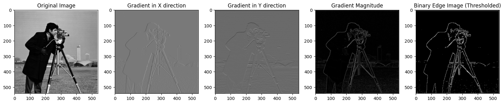In this version, the only difference is that the image was convolved with a gaussian blurring filter beforehand. This means that the transitions between edges are smoothed, making the gradient magnitude more apparent. The visual differences seen in the result are better highlighted/thicker edges. Images are shown below
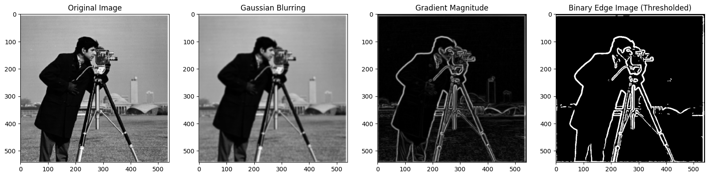For this part, the program runs a single convolution, and the results are the same, as displayed below
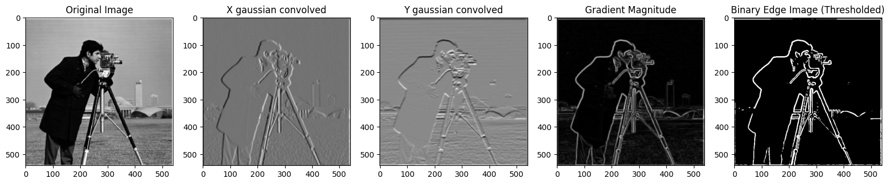The image sharpening process starts with extracting the high frequencies from the image. This is done through applying a gaussian blur filter and then subtracting the blurred image (low frequencies) from the original to get the high frequencies. Then, I have added the high frequencies to the original image, where the high frequencies are weighted by different alphas.
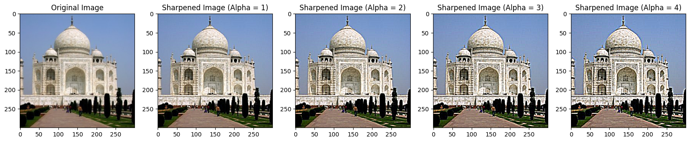 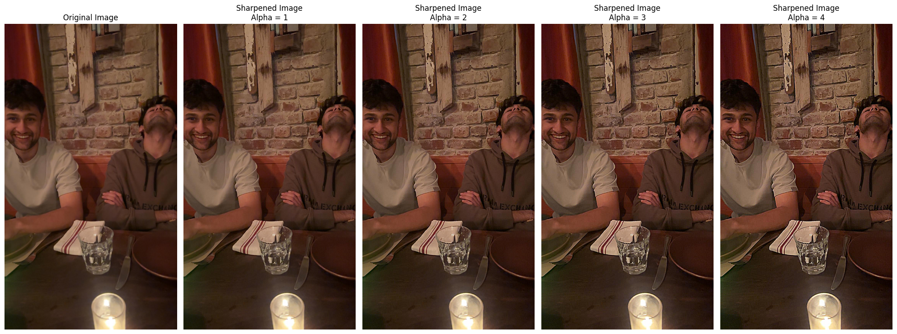As described in the project spec, the hybrid images were created by low-pass filtering one image and high-pass filtering the second image and then combining the two. The two examples and one failed example are shown below. The hyperparameter values for the Gaussian filter were set through experimentation and qualitative assesment.
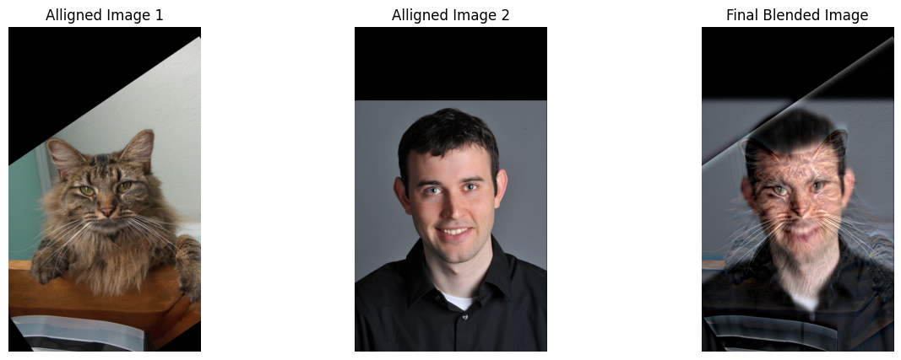 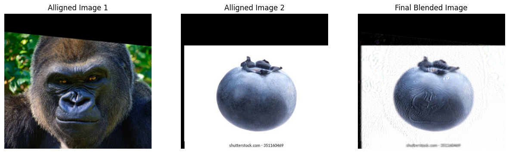 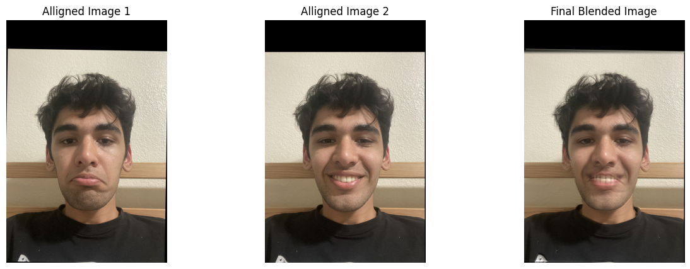The Fourier output images are calculated as shown in the spec for the Cat and Derek image combination
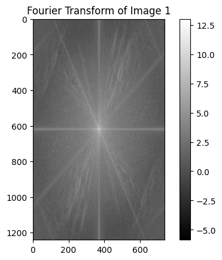 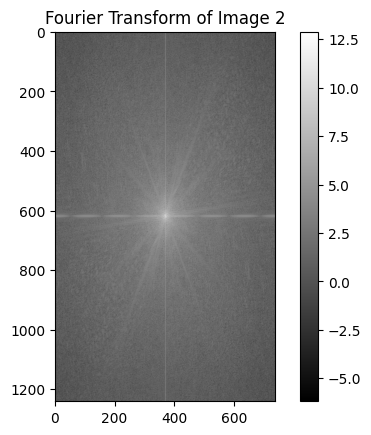 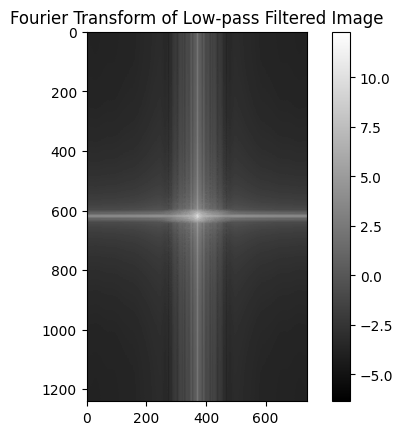 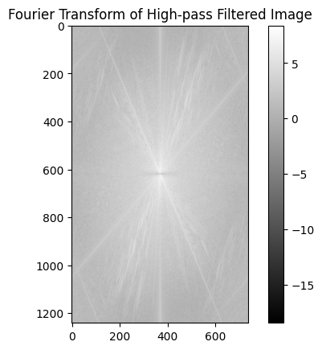 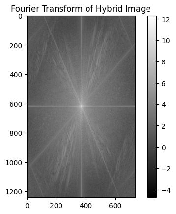The Gaussian stack is made by consistently applying the Gaussian blur on the original image. The Laplacian stack on the other hand, is created by subtracting consecutive iamges in the Gaussian stack, highlighting/extracting all the high frequancies from the image. The stacks for the orange and apple are shown below.
 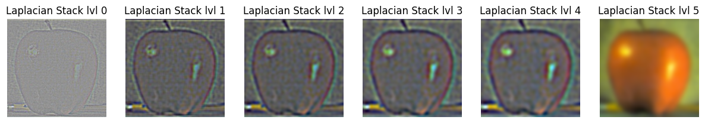
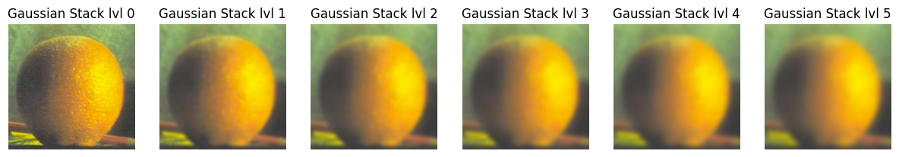
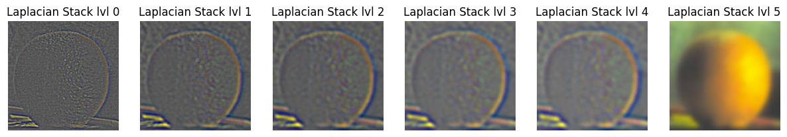
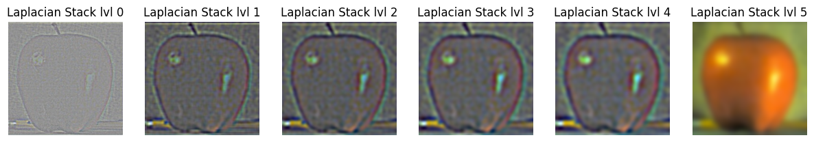
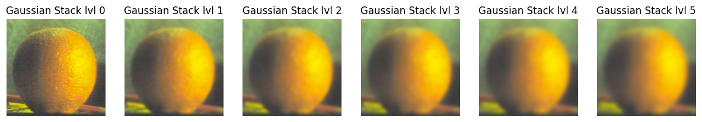
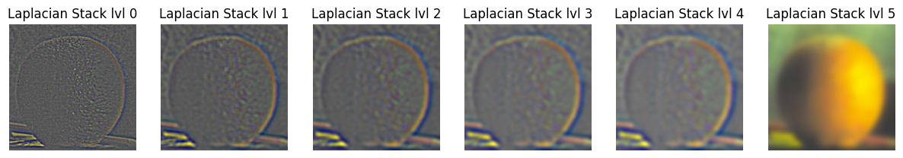
From the Gaussian and Laplacian stacks, we can create a mask that can be used to merge the two images. For the orapple, the mask is just one side/half of the image, but I have created a circular mask for one of the examples. For process for blending, I created a Laplacian stack with the merged images and summed over the whole stack, including the last item so that all the low and high frequencies are added up to create the final image.
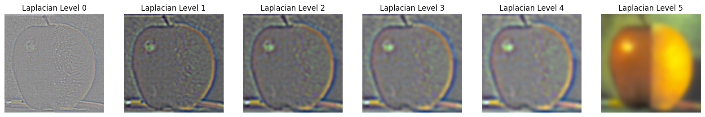 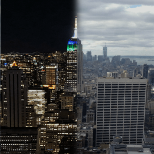Some other examples are shown below. The New York skyline day and night merged image is made with the rectangular/vertical split mask, but the last example shown is made with a circular mask restricted by a radius parameter.
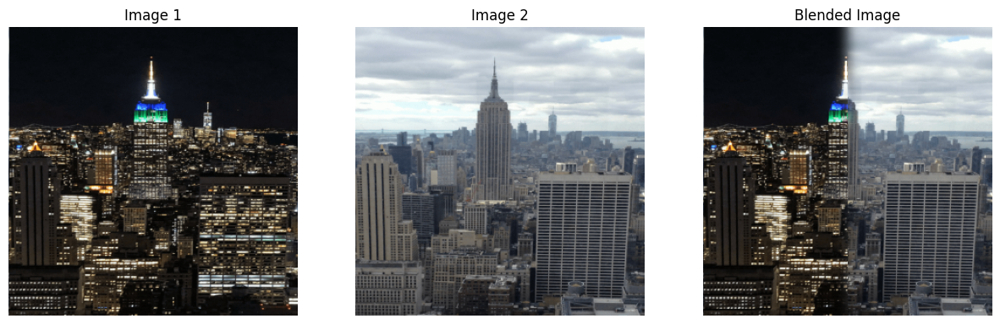 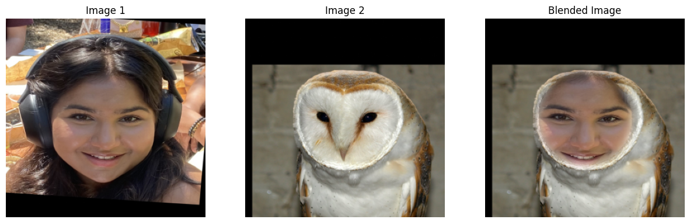I have taken some inspiration from ChatGPT and pretrained LLM's to create the structure for some parts of the website.
Back to Main Page